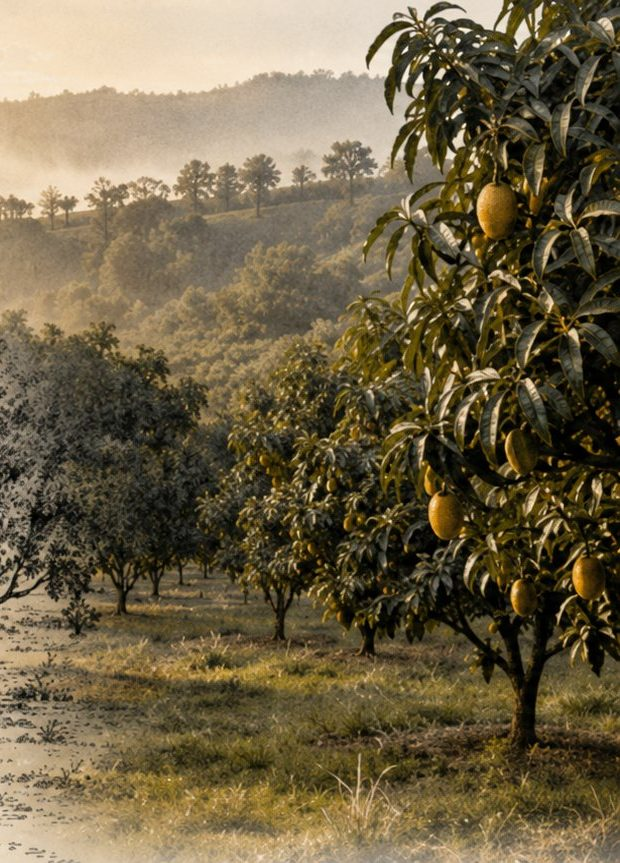

A piece of land that becomes part of your family story.
We create places where ownership turns into experience — homes, friendships, seasons, memories and something worth passing on.
More than something you own.
Somewhere you return to, grow with and remember.